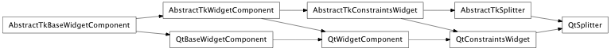
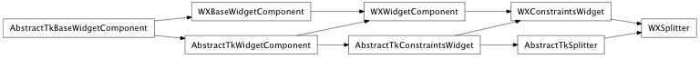

Bases: enaml.components.layout_task_handler.LayoutTaskHandler, enaml.components.constraints_widget.ConstraintsWidget
A LayoutComponent subclass that displays its children in separate resizable compartements that are connected with a resizing bar.
The read-only list of widget children for the splitter.
The orientation of the Splitter. ‘horizontal’ means the children are laid out left to right, ‘vertical’ means top to bottom.
Whether the child widgets resize as a splitter is being dragged (True), or if a simple indicator is drawn until the drag handle is released (False). The default is True.
A list of preferred sizes for each compartment of the splitter, or None if there is no preference for the size.
How strongly a component hugs it’s contents’ width. A Splitter container ignores its width hug by default, so it expands freely in width.
How strongly a component hugs it’s contents’ height. A Splitter container ignores its height hug by default, so it expands freely in height.
Overridden parent class trait
A reimplemented LayoutTaskHandler handler method which will perform necessary update activity when a relayout it requested.
Update the sizes of each of the splitters based on the size hints of the children and the orientation of the splitter. The minimum sizes of the children are also computed and applied.
alias of __NoInterface__

Bases: enaml.backends.qt.qt_constraints_widget.QtConstraintsWidget, enaml.components.splitter.AbstractTkSplitter
A Qt implementation of a Splitter.
The change handler for the ‘live_drag’ attribut of the shell object.

Bases: enaml.backends.wx.wx_constraints_widget.WXConstraintsWidget, enaml.components.splitter.AbstractTkSplitter
A Wx implementation of Splitter.
The change handler for the ‘live_drag’ attribute of the shell object.